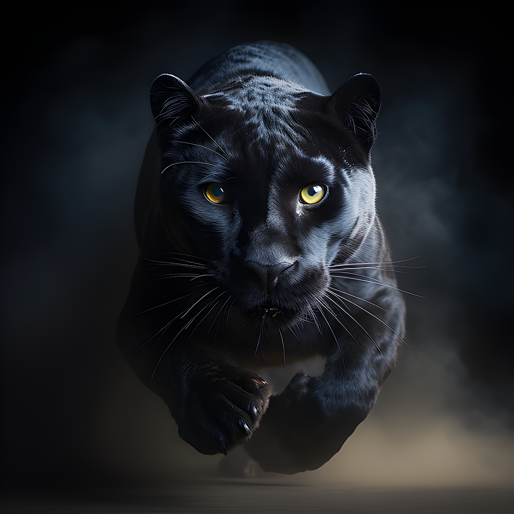

La pantera negra es un felino de gran tamaño que puede llegar a medir los dos metros de largo. Este animal es muy particular, ya que, en sí, se trata de un jaguar (Panthera onca) o leopardo (Panthera pardus), solo que, a diferencia de esas dos especies, este presenta pelaje negro debido a un problema con su melanina.
